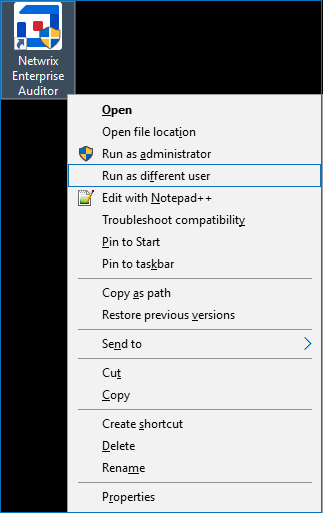

Symptom
The following error appears when you open or close Netwrix Enterprise Auditor (NEA):
FAILED: the default schema name is incorrect
Causes
Refer to the following possible causes:
-
The user working in NEA does not have sufficient permissions to access the NEA database.
-
When using the Windows authentication method for the database service account, the account has insufficient permissions to access the database.
Resolutions
Refer to the corresponding resolution:
-
Log in to NEA with a user account that has properly provisioned permissions to the SQL database. Hold Shift and right-click the Enterprise Auditor icon. Select Run as different user.
 -
Grant the correct SQL DB permissions to the current user via the SQL Server Management Studio (SSMS) application. Refer to the following article for additional information on required permissions: Enterprise Auditor Database — Database Creation & First Level of Security · v11.6.